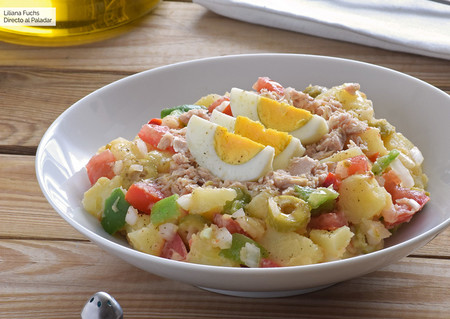
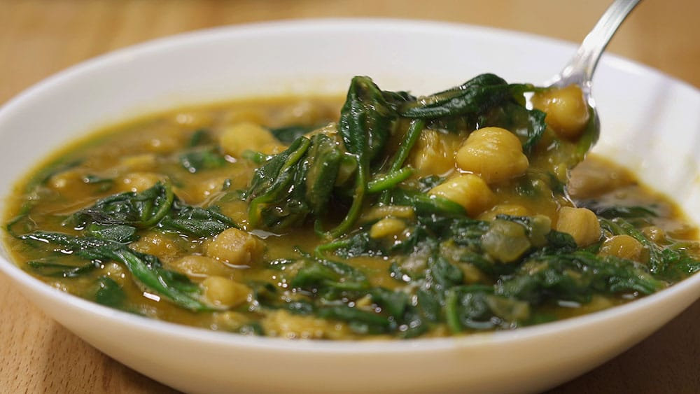

Ensalada de verano
Cuando las temperaturas comienzan a subir pocas personas son capaces de disfrutar plenamente de un plato de
cuchara bien caliente, ya empiezan a apetecer más las ensaladas fresquitas con mucho sabor y de texturas
deliciosas. Una buena forma de completar vuestro menú de verano y que podéis utilizar como plato principal o
como primer plato
- 2 kg. de patatas nuevas de tamaño mediano
- 1 cebolla grande
- 1 pimiento rojo
- 1 pimiento verde
receta completa
Garbanzo con espinaca
Cuando las temperaturas comienzan a subir pocas personas son capaces de disfrutar plenamente de un plato de
cuchara bien caliente, ya empiezan a apetecer más las ensaladas fresquitas con mucho sabor y de texturas
deliciosas. Una buena forma de completar vuestro menú de verano y que podéis utilizar como plato principal o
como primer plato
- 400g de garbanzos
- 500g de espinacas
- 1/2 cebolla
- 2 dientes de ajo
receta completa